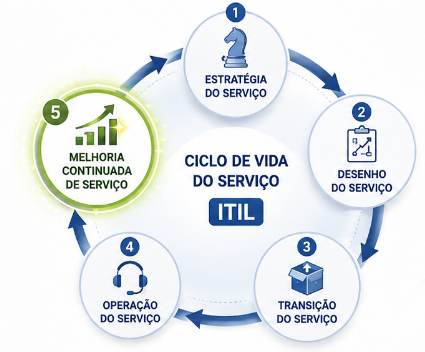

Capítulo 2 Revisão Governança da Informação e da Tecnologia 18/08/2026
2.1 Questão 7 (ITIL - Melhoria Continuada de Serviço)
Leia o texto a seguir.

Os serviços de Tecnologia da Informação (TI) podem ser melhorados em relação ao seu Ciclo de Vida do Serviço, no alinhamento do Portfólio de TI com os requerimentos atuais e futuros e com o aumento da maturidade das entregas dos processos em cada Serviço de TI. No Information Technology Infrastructure Library (ITIL), essa melhoria ocorre na etapa de Melhoria Continuada de Serviço.
FREITAS, M. A. S. Fundamentos do gerenciamento de serviços de TI. Rio de Janeiro: Brasport, 2013 (com adaptações).
Considerando o ciclo de vida do serviço descrito, a etapa de Melhoria Continuada de Serviço do ITIL
descreve a fase do ciclo de vida responsável pelas atividades do dia a dia, orientando sobre como garantir a entrega e o suporte a serviços de forma eficiente e eficaz em ambientes operacionais gerenciados.
orienta, através de princípios, práticas e métodos de gerenciamento da qualidade, sobre como aprimorar a qualidade do serviço, incluindo as metas de eficiência operacional e a continuidade do serviço.
orienta sobre como visualizar o gerenciamento de serviços não somente como uma capacidade organizacional, e sim como ativo estratégico, descrevendo princípios úteis para criar políticas, diretrizes e processos de gerenciamento.
orienta sobre como implantar serviços novos e modificados para ambientes operacionais gerenciados, detalhando os processos de planejamento, gerenciamento de mudanças, gerenciamento da configuração e gerenciamento de liberação.
fornece orientação para o desenvolvimento dos serviços e das práticas de gerenciamento de serviços, propondo mudanças e melhorias necessárias para manter ou agregar valor aos clientes ao longo do ciclo de vida do serviço.
2.1.2 Justificativa:
A - Alternativa incorreta.
JUSTIFICATIVA. A fase do ciclo de vida responsável pelas atividades do dia a dia, que orienta sobre como garantir a entrega e o suporte a serviços de forma eficiente e eficaz em ambientes operacionais gerenciados, é conhecida como operação de serviço.
B - Alternativa correta.
JUSTIFICATIVA. A melhoria contínua envolve todos os elementos do sistema de valor de serviço (SVS) do ITIL e as práticas e os serviços da organização destinados a atender as necessidades de negócios. Isso é feito por meio da avaliação e da melhoria contínua de cada elemento envolvido na gestão de produtos e serviços.
C - Alternativa incorreta.
JUSTIFICATIVA. A estratégia de serviço visualiza o gerenciamento de serviços como um ativo estratégico e descreve os princípios inerentes à prática dessa disciplina, que são úteis para criar políticas, diretrizes e processos de gerenciamento de serviços ao longo do ciclo de vida.
D - Alternativa incorreta.
JUSTIFICATIVA. A transição de serviços orienta sobre como implantar serviços novos e modificados para ambientes operacionais gerenciados, detalhando os processos de planejamento, gerenciamento de mudanças, gerenciamento da configuração e gerenciamento
de liberação.
E - Alternativa incorreta.
JUSTIFICATIVA. O desenho de serviços fornece orientação para o desenvolvimento dos serviços e das práticas de gerenciamento de serviços, propondo mudanças e melhorias necessárias para manter ou agregar valor aos clientes ao longo do ciclo de vida do serviço.